유통관리사-1급 (2021-08-21 기출문제)
1과목: 유통경영
1. 아래 글상자는 유통점포의 상품관리에 활용되는 ABC 분석에 대한 설명이다. 옳은 설명으로 짝지어진 것은?
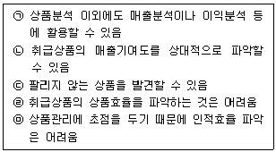
- ㉠, ㉡, ㉢
- ㉡, ㉢, ㉣
- ㉢, ㉣, ㉤
- ㉠, ㉢, ㉣
- ㉡, ㉣, ㉤
(정답률: 30%)

2. 유통점포의 경영분석 시 주로 수익성, 안전성, 생산성, 성장성 등을 활용하는데, 다음 중 나머지 넷과 성격이 다른 지표는?
- 매출액 영업이익률
- 총자본 회전율
- 매출액 대비 인건비 비율
- 총자본 이익률
- 자기자본비율
(정답률: 0%)
3. 독점규제 및 공정거래에 관한 법률(법률 제17290호, 2020.5.19., 일부개정)에서는 시장 지배적 사업자에 대해 규정하고 있다. 아래 글상자 (㉠)과 (㉡)에 들어갈 숫자로 옳은 것은?
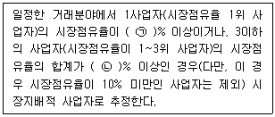
- ㉠ 45, ㉡ 70
- ㉠ 50, ㉡ 75
- ㉠ 45, ㉡ 75
- ㉠ 50, ㉡ 80
- ㉠ 45, ㉡ 80
(정답률: 30%)
4. 조직변화는 속도에 따라 점진적 변화와 급진적 변화로 구분할 수 있는데, 점진적 조직변화를 위한 방법으로 옳은 것은?
- 변혁
- 혁신
- 리엔지니어링
- 문화충격요법
- 단기적 균형변화
(정답률: 40%)
5. 기업의 사회적 책임(CSR)과 사회적 가치에 대한 설명으로서 가장 옳지 않은 것은?
- ISO 26000은 CSR 경영의 세계적 표준의 하나이다.
- 경제 성장이 아닌 ESG(환경 보존, 사회 공헌, 윤리경영)를 강조한다.
- CSR은 기업 차원에서 사회적 가치를 실현하려는 노력과 관련되어 있다.
- 사회적 가치 관점의 CSR 목표는 사회의 지속가능발전에 기여하는 것이다.
- 사회적 가치를 실현하는 사회적책임경영은 민간기업과 더불어 공공기관에도 적용된다.
(정답률: 30%)
6. 아래 글상자에서 유통점포의 투자수익률을 높이는 방법을 모두 고른 것으로 옳은 것은?
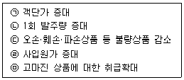
- ㉠, ㉢, ㉤
- ㉡, ㉣, ㉤
- ㉠, ㉢, ㉣
- ㉡, ㉢, ㉤
- ㉢, ㉣, ㉤
(정답률: 40%)
7. 제조업체와 소매업체가 공동으로 수행하는 협동광고(cooperative advertising)의 특성을 설명한 것으로 옳지 않은 것은?
- 양자가 추구하는 목표가 다르므로 갈등의 원인이 될 수도 있다.
- 편의품 보다는 선매품이, 상대적 저가의 상품보다는 고가의 상품이 협동광고의 효과가 크다.
- 상표 애호도가 높은 제품일수록 협동광고가 선호된다.
- 제조업자가 푸시전략을 채택하여 중간상에게 더 많이 의존할수록 협동광고가 중요해진다.
- 소매상 간의 경쟁이 심해질수록 소매상은 더 많은 협동광고를 원하지만, 제조업체는 이를 기피하려는 경향이 있다.
(정답률: 0%)
8. 고객 커뮤니케이션 믹스 설계 시, 고려해야 할 요소들에 대한 설명으로 옳지 않은 것은?
- 소비재는 산업재에 비해 개인접촉에 의한 인적 판매의 중요성이 높다.
- 성숙기에는 광고에 비해 판매 촉진의 역할이 커진다.
- 홍보는 광고에 비해 비용이 적게 들면서도 설득력이 높다는 장점이 있다.
- 제품수명주기의 초기단계일수록 광고의 역할이 크다.
- 푸시(push)전략을 실행할 때는 인적 판매의 역할이 커진다.
(정답률: 10%)
9. 통제·효율성을 강조하여 설계된 조직을 수직적 조직, 의사소통·조정을 강조하여 설계된 조직을 수평적 조직이라고 할 경우, 수직적 조직이 수평적 조직보다 유리한 경우로서 옳은 것은?
- 다양한 학습이 필요한 경우
- 과업이 세분화, 분업화되어 있는 경우
- 조직계층의 구분이 느슨한 경우
- 권한위양이 대폭적으로 이루어진 경우
- 다수의 팀과 태스크포스가 존재하는 경우
(정답률: 20%)
10. 남녀고용평등과 일·가정 양립 지원에 관한 법률(법률 제 18178호, 2021.5.18., 일부개정)에 대한 내용으로 옳지 않은 것은?
- 사업주가 사업을 계속할 수 없는 상황이더라도 근로자가 육아휴직 중이라면 해고할 수 없다.
- 동일가치 노동에 대해서는 남녀를 불문하고 동일한 임금을 지급해야 한다.
- 누구든지 성희롱 발생사실을 알게 된 경우 당사자가 아니라도 사업주에게 신고할 수 있다.
- 근로자가 배우자의 출산을 이유로 휴가를 청구하는 경우 10일 간의 휴가를 주고 이 경우 사용한 휴가기간은 유급이 된다.
- 육아휴직이나 육아기 근로시간 단축 신청은 만8세 이하 또는 초등학교 2학년 이하의 자녀를 양육하기 위한 경우에 한해 신청할 수 있다.
(정답률: 20%)
11. 소매마케팅에서 구색(assortment)의 창출은 매우 중요한 활동인데, 구색은 소매상 단독으로 창출하는 것이 아니라 여러 선행 활동을 통하여 창출된다. 일반적인 구색 창출 단계를 순서대로 나열한 것으로 옳은 것은?
- 수집(accumulation) - 분류(sorting out) - 배분(allocation) - 구색(assortment)
- 배분(allocation) - 수집(accumulation) - 분류(sorting out) - 구색(assortment)
- 분류(sorting out) - 배분(allocation) - 수집(accumulation) - 구색(assortment)
- 배분(allocation) - 분류(sorting out) - 수집(accumulation) - 구색(assortment)
- 분류(sorting out) - 수집(accumulation) - 배분(allocation) - 구색(assortment)
(정답률: 10%)
12. 아래 글상자 수치를 참고하여 손익분기점 매출액을 구한 것으로 옳은 것은?
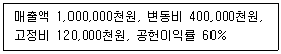
- 100,000천원
- 150,000천원
- 200,000천원
- 300,000천원
- 400,000천원
(정답률: 20%)
13. 유통산업은 통상적으로 대표적인 지역산업(domestic industry)으로 간주되어 왔으나 근래에 들어 글로벌산업(global industry)으로 바뀌고 있다. 유통산업의 글로벌화(globalization) 추세와 관련한 설명으로 직접적인 관련이 가장 적은 것은?
- 국제적으로 동질적 수요의 확산
- 노동집약 생산 방식에서 자본집약적 생산 방식으로의 이전
- 국가 간 교역 장애 감소
- 정보기술 및 인터넷의 확산
- 자본이동의 자유화
(정답률: 30%)
14. 기업의 경영 규모 및 경영성과가 일정 기간 중에 얼마나 증가했는지를 나타내는 비율인 성장성 비율과 관련된 설명 중 가장 옳지 않은 것은?
- 자기자본순이익률은 자기자본을 당기순이익으로 나누어 비율로 나타낸 것이다.
- 주당배당성장률은 당기주당배당증가액을 전기주당배당으로 나누어 비율로 나타낸 것이다.
- 매출액증가율은 당기매출증가액을 전기매출액으로 나누어 비율로 나타낸 것이다.
- 총자산증가율은 당기총자산증가액을 전기말총자산으로 나누어 비율로 나타낸 것이다.
- 주당이익성장률은 당기주당이익증가액을 전기주당이익으로 나누어 비율로 나타낸 것이다.
(정답률: 20%)
15. 다음 중 조직 관리자의 행동 및 리더십의 유형을 설명하는 이론은?
- 맥클리랜드(McClelland)의 성취동기이론
- 매슬로우(Maslow)의 욕구단계설
- 블레이크와 무튼(Blake & Mouton)의 관리격자이론
- 알더퍼(Alderfer)의 ERG 이론
- 허즈버그(Herzberg)의 2요인 이론
(정답률: 30%)
16. 여러 가지 재무비율들 간의 상호관련성을 탐색하는 방법인 전략적 이익 모형의 구성요인으로 가장 옳지 않은 것은?
- 자산회전율
- 순이익률
- 자산수익률
- 레버리지비율
- 채권수익관리율
(정답률: 37%)
17. 조직효과성을 측정하는 전통적 접근방법의 하나인 목표접근법에서 사용되는 지표로서 가장 옳지 않은 것은?
- 수익성
- 기업문화
- 제품 품질
- 시장점유율
- 사회적 책임
(정답률: 20%)
18. 인사고과 시 범하기 쉬운 여러 오류에 대한 설명 중에서 옳지 않은 것은?
- 대비오류는 피고과자를 고과자 자신의 기준에서 보는 것으로, 고과자가 자신이 유능하다고 생각하는 경우 피고과자도 유능한 것으로 판단하기 쉬운 오류를 말한다.
- 근접오류는 평가시점과 가까운 시점에 일어난 사건이 평가에 큰 영향을 미치게 되는 오류를 말한다.
- 관대의 오류와 인색의 오류를 막기 위해서는 강제배분법을 활용하는 것이 바람직하다.
- 상동적 태도(stereotyping)란 소속집단의 특성에 근거하여 개인을 평가하는 오류를 말한다.
- 중심화경향은 고과자 자신의 능력이 부족하거나 피고과자를 잘 파악하지 못하고 있는 경우에 많이 나타난다.
(정답률: 20%)
19. 소매업의 제품 성과를 평가하는 측정법 중 하나인 제품별 직접이익(DPP: direct product profit)에 관한 설명으로 옳지 않은 것은?
- 제품에 수반되는 영업 및 머천다이징 비용과 간접노동비용을 차감한 이익이다.
- 제품별 직접이익은 조정된 총수익에서 제품별 직접비용을 뺀 값이다.
- 제품평가에 있어 고정비를 제외한 변동비만을 고려하여 분석한다.
- 개별 제품에서의 의미보다 둘 이상을 비교하는 경우에 유용하다.
- 각 제품이 이익에 얼마나 공헌하는지 경로성과 측정에 활용된다.
(정답률: 10%)
20. 아래 글상자의 내용은 무엇에 대한 설명인가?
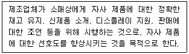
- 파견 판매(missionary selling)
- 판매 경연대회(sales contest)
- 시연회(demonstration)
- 이벤트 마케팅(event marketing)
- 풀 전략(pull strategy)
(정답률: 0%)
2과목: 물류경영
21. 선하증권의 법정기재사항으로 옳지 않은 것은?
- 선박의 명칭
- 본선항해번호
- 운송물의 외관상태
- 발행지와 발행연월일
- 운송사의 상호
(정답률: 10%)
22. 전자상거래 적용으로 인한 제조업체와 유통업체 간의 물류변화에 대한 설명으로 가장 옳지 않은 것은?
- 소비자가 배송시간대를 직접 선택하는 것이 가능한 경우도 있다.
- 배송물품의 실시간 추적이 가능하다.
- 최종 배송지의 획일화로 물류네트워크가 보다 단순해지고 집중화 되었다.
- 개별고객의 주문정보를 확보할 수 있다.
- 최소 1개 단위의 물품배송도 이루어진다.
(정답률: 20%)
23. 기업이 유통물류정보시스템을 구축하여 얻을 수 있는 효과로 가장 옳지 않은 것은?
- 합리적인 유통물류전략을 수립할 수 있다.
- 재고관리, 운송관리, 창고관리 등의 업무 생산성을 향상시킬 수 있다.
- 각종 정보를 통해 유통물류 상황변화에 보다 능동적으로 대응할 수 있다.
- 수송지연으로 인한 품절을 줄여서 판매를 활성화할 수 있다.
- 고객충성도 프로그램을 효과적으로 운영할 수 있다.
(정답률: 10%)
24. 물류자회사가 가지는 단점으로 옳지 않은 것은?
- 모회사의 주도로 인사정책을 펼칠 가능성
- 모회사의 하청기업으로 전락할 가능성
- 모회사의 물류전략과 자회사의 물류전략의 충돌 가능성
- 모회사의 간섭증가로 독립성 결여 및 업무의욕저하 가능성
- 모회사로부터 안정적인 물량 확보 불가능
(정답률: 20%)
25. 물류계획과 관련한 주요 의사결정 분야에 대한 내용으로 옳지 않은 것은?
- 창고, 터미널 등 시설 입지 분야
- 주문량 및 주문시기와 관련한 주문관리 분야
- 경로설정 및 배차와 관련한 주문처리 분야
- 고객주문에 대한 우선순위 결정인 고객서비스 분야
- 공급업체 선정과 선구매 등의 구매 분야
(정답률: 0%)
26. 물류센터를 주요 기능에 따라 보관센터, 환적센터, 배송센터로 나눌 때 각각에 대한 설명으로 가장 옳지 않은 것은?
- ICD는 화물의 장기보관을 주요 목적으로 하는 대표적인 보관센터이다.
- 화물의 환적기능을 주요 목적으로 하는 시설인 환적센터는 물류터미널이 대표적이다.
- 환적센터에서는 최소한의 포장변경 등을 제외하고는 부가가치 활동이 발생할 가능성이 적다.
- 화물의 집배송 기능을 주요 목적으로 하는 시설에는 집배송센터가 있다.
- 보관센터나 배송센터에서는 부가가치 활동이 발생하기도 한다.
(정답률: 0%)
27. 바코드에 비해 RFID가 가지는 특징에 대한 설명으로 가장 옳지 않은 것은?
- 전파를 이용하여 정보를 판독하므로 원거리에서도 정보를 인식할 수 있다.
- 정보인식 시간은 다소 길지만 보다 정확하게 인식할 수 있다.
- 정보간의 충돌을 방지하는 기능을 가지고 있어 여러정보를 동시에 판독할 수 있다.
- 보다 많은 정보를 저장할 수 있다.
- 태그에 저장되어 있는 정보의 수정이 가능하다.
(정답률: 30%)
28. 선적은 화주의 책임과 비용으로, 양륙은 선주의 책임과 비용으로 이뤄지는 하역비조건으로 옳은 것은?
- Berth Term
- Free In(F.I)
- Free Out(F.O)
- Free In & Out(F.I.O)
- Free In, Free Out, Stowed, Trimmed(F.I.O.S.T)
(정답률: 20%)
29. 고객서비스 구성요소를 거래전요소, 거래요소, 거래후 요소로 구분할 때 거래요소에 해당되지 않는 것은?
- 주문현황정보
- 재고가용성
- 예비부품가용성
- 주문인도시간
- 주문이행률
(정답률: 20%)
30. 효과적인 물류활동을 실시하기 위한 설명으로 가장 옳지 않은 것은?
- 유닛로드시스템은 제품을 하나의 단위로 모아서 하역과 수송 등의 물류활동을 지원하는 시스템이다.
- 일관팔레트화는 제품의 보관만을 위해 팔레트를 활용하는 것이다.
- 하역장비의 표준화는 하역작업의 기계화, 자동화를 가능하게 한다.
- 팔레트 규격의 통일화는 보다 효율적인 물류활동을 가능하게 한다.
- 기업은 물류수요, 비용, 수익 등을 고려하여 물류 자동화의 정도를 결정해야 한다.
(정답률: 10%)
31. QR시스템을 사용할 때 얻을 수 있는 효과에 대한 설명으로 가장 옳지 않은 것은?
- 전반적인 비용 감소 효과를 누릴 수 있다.
- 관련 업무의 효율화를 기할 수 있다.
- 시장의 요구에 기민하게 대응할 수 있다.
- EDI 사용으로 주문단계가 단순화되고 리드타임이 감소하는 효과를 얻는다.
- 보유재고의 증가로 품절문제가 해소되어 고객서비스가 높아진다.
(정답률: 10%)
32. 물류표준화의 저해요인으로 옳지 않은 것은?
- 표준화에 대한 인식부족
- ULS규격의 표준팔레트 등 물류기기의 사용미흡
- 표준EDI, 표준물류바코드 등 정보화 기반요소의 활용부족
- 물류정보의 유통체제 미흡
- 표준팔레트와 정합되는 KS 외부포장규격의 종류가 적어 보급저조
(정답률: 20%)
33. 아래 글상자는 기업형 물류조직의 하나인 영업부형 물류 조직에 대한 설명이다. ( )안에 들어갈 용어로 옳은 것은?
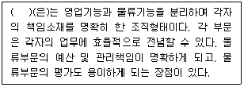
- 스태프형
- 상물혼재형
- 상물분리형
- 종합형
- 그리드형
(정답률: 30%)
34. 보관과 관련된 각종 원칙에 대한 설명으로 가장 옳지 않은 것은?
- 높이쌓기의 원칙은 팔레트나 렉을 이용하여 높이 쌓아서 보관하는 것이다.
- FIFO의 원칙은 먼저 보관한 것을 먼저 꺼내는 것이다.
- 중량특성의 법칙은 제품을 중량별로 구분해서 보관하는 것이다.
- 주소(위치)표시의 원칙은 보관품의 장소를 명시하여 반출입을 편리하게 하는 것이다.
- 회전대응보관의 원칙은 출입구가 동일한 경우 출하빈도가 높은 제품을 가장 안쪽에 보관하는 것이다.
(정답률: 19%)
35. 보세운송에 대한 내용으로 옳지 않은 것은?
- 보세운송은 외국으로부터 수입하는 화물을 입항지에서 통관한 후 세관장에게 신고하거나 승인을 얻어 내국물품 상태 그대로 다른 보세구역으로 운송하는 것이다.
- 외국물품은 개항, 보세구역, 세관관서 등 정해진 장소사이에 한정하여 그대로 운송할 수 있다.
- 보세운송은 수입화물에 대한 관세가 유보된 상태에서 관리가 요구된다.
- 보세운송의 신고를 하거나 승인을 얻은 자는 당해 물품이 운송목적지에 도착한 때에는 도착지 세관장에게 보고해야 한다.
- 세관공무원은 보세운송을 하고자 하는 물품을 검사할 수 있다.
(정답률: 0%)
36. 부정기선에 관한 내용으로 옳은 것은?
- 운송수요자의 요구에 따라 일정한 항로를 정기적으로 운항하는 선박이다.
- 해상물동량과 선박선복수급관계에 따라 부정기선시황이 좌우된다.
- 부정기선의 주요 운송대상은 중량이나 용적에 비해 가치가 낮은 것을 특징으로 하는 운임부담력이 높은 화물이다.
- 부정기선 시장은 운임동맹과 같은 국제적 카르텔조직이 있어서 운송서비스 제공자로서 시장참여가 자유롭지 않다.
- 부정기선 시장은 선복 공급이 물동량 변화에 매우 탄력적이라서 선복수급 균형을 이루기 쉽다.
(정답률: 10%)
37. 컨테이너에 대한 설명으로 옳지 않은 것은?
- 컨테이너의 CSC Safety approval(안전승인판)에는 승인국, 승인번호, 승인년도, 컨테이너 제조자 일련번호 등이 기재되어 있다.
- 냉장, 냉동뿐 아니라 보냉을 위해 일정 온도를 유지시키기도 한다.
- 컨테이너 포괄리스는 컨테이너리스 계약기간 중 사용개수에 구속받을 필요가 없다.
- 컨테이너 편도리스는 일방통행의 임차로서 도착지에서 공컨테이너를 리스회사에 반납하는 계약이다.
- 플랫폼 컨테이너는 지붕과 벽을 제거하고 고정을 위한 기둥과 버팀대만을 두어 기계류나 목재, 승용차 종류를 수송하기 위한 컨테이너이다.
(정답률: 0%)
38. 물류정책기본법(법률 제17550호, 2020.10.20., 일부개정)상 용어의 정의로 옳지 않은 것은?
- “물류체계”란 효율적인 물류활동을 위하여 시설·장비·정보·조직 및 인력 등이 서로 유기적으로 기능을 발휘할 수 있도록 연계된 집합체를 말한다.
- “종합물류정보망”이란 기능별 또는 지역별로 관련 행정기관, 물류기업 및 그 거래처를 연결하는 일련의 물류정보체계를 말한다.
- “제3자물류”란 화주가 그와 대통령령으로 정하는 특수관계에 있지 아니한 물류기업에 물류활동의 일부 또는 전부를 위탁하는 것을 말한다.
- “국제물류주선업”이란 타인의 수요에 따라 자기의 명의와 계산으로 타인의 물류시설·장비 등을 이용하여 수출입화물의 물류를 주선하는 사업을 말한다.
- “물류보안”이란 공항·항만과 물류시설에 폭발물, 무기류 등 위해물품을 은닉·반입하는 행위와 물류에 필요한 시설·장비·인력·조직·정보망 및 화물 등에 위해를 가할 목적으로 행하여지는 불법행위를 사전에 방지하기 위한 조치를 말한다.
(정답률: 0%)
39. ISO(International Organization for Standardization)의 컨테이너 정의를 구성하는 내용으로 옳지 않은 것은?
- 내구성이 있다.
- 반복사용에 적합한 충분한 강도를 지닌다.
- 운송형태의 전환 시 신속한 취급이 가능하다.
- 화물의 적입과 적출이 용이하도록 설계된다.
- 운송도중 내용화물의 이적을 통해 화물의 운송이 용이하도록 설계된다.
(정답률: 20%)
40. 물류비에 의한 물류관리 요건에 대한 설명으로 옳지 않은 것은?
- 원인 규명이 용이할 것
- 이용 목적이 명확할 것
- 시계열 데이터로서 계속성이 있을 것
- 물류비의 내역이 복잡하고 처리가 어려울 것
- 데이터의 수집이 쉽고, 이 데이터를 일상화(routine)할 수 있을 것
(정답률: 20%)
3과목: 상권분석
41. 확률적 상권분석방법에서 이용하는 상권내 점포들의 점포선택 등확률선(isoprobability contours, 확률등치선)을 통해 파악할 수 있는 내용으로 가장 옳지 않은 것은?
- 점포별 상권잠식현상
- 거리증가에 따른 점포선택확률 감소현상
- 소매점포의 경쟁자 확인
- 1차상권, 2차상권, 한계상권의 확인
- 유동인구의 흐름 확인
(정답률: 0%)
42. 쇼핑센터의 공간구성요소에 대한 설명으로 옳지 않은 것은?
- 결절점(node) - 교차하는 통로의 접합점
- 지표(landmark) - 길찾기를 위한 방향성 제공
- 에지(edge) - 경계선이며 건물에서 꺾이는 부분에 해당
- 보이드(void) - 공간과 공간을 분리하여 영역성을 부여
- 선큰(sunken) - 지하공간의 쾌적성과 접근성을 높임
(정답률: 10%)
43. 상권분석 기법들 중에서 공간상호작용모델의 하나인 Huff모델에 관련된 설명으로 옳지 않은 것은?
- 소매상권이 연속적이고 중복적 구역이라는 관점에서 분석된다.
- 개별 구매행동이 확률론적 방식보다는 결정론적으로 설명된다.
- 타 점포 상권에 대한 신규점포 개설의 영향을 분석할 수 있다.
- 신규점포에 대한 최적의 부지를 선정할 때 활용할 수 있다.
- 특정 점포의 확장이 타점포에 미치는 영향을 분석할 수 있다.
(정답률: 10%)
44. 상권 및 입지분석과정에서 점포의 위치와 소비자의 분포 분석을 통해 관찰할 수 있는 거리감소효과(distance decay effect)에 대한 설명으로 옳지 않은 것은?
- 일반적으로 점포로부터 멀어질수록 고객의 밀도가 낮아지는 경향을 말한다.
- 유사점포법, 회귀분석법을 이용하여 확인할 수 있다.
- 고객점표(CST) 지도를 이용하면 쉽게 관찰할 수 있다.
- 거리 마찰에 따른 비용과 시간의 증가율 때문에 발생한다.
- 거리조락현상 또는 거리체증효과라고도 한다.
(정답률: 10%)
45. 소비자의 소비행동 변화가 소매상권에 미치는 영향에 관한 설명 중 가장 옳지 않은 것은?
- 소득의 증가는 사치품에 대한 수요증가로 이어진다.
- 소득이 증가하면 교통비 지출에 대한 부담감이 줄어 들어 소비자의 공간행동의 범위가 넓어진다.
- 자동차 이용빈도가 높을수록 소매점포를 선택하는 폭은 좁아지는 경향이 있다.
- 자동차보급률이 높아질수록 소매점 선택 시 접근성에 대한 중요도는 낮아진다.
- 높은 자동차의 보급률은 일괄구매(one-stop shopping) 성향을 증가시킨다.
(정답률: 10%)
46. 도시 A는 도시 B보다 2배 많은 인구를 가지고 있다. 컨버스(P. D. Converse)의 수정소매인력이론을 적용할 때, 중소도시 C는 두 대도시 A, B의 분기점에 해당한다고 가정하자. 다음 중 소매인력법칙들의 주장으로서 가장 옳지 않은 것은?
- A와 C 사이의 거리는 B와 C 사이의 거리의 4배이다.
- 해당 방향에 대한 A와 B의 상권범위는 각각 C까지이다.
- C의 주민들은 A와 B 사이에 쇼핑매력성의 차이를 느끼지 않는다.
- A, B만 출역구매 대상도시인 경우, A와 B는 C의 주민들의 출역구매지출을 반분한다.
- A와 B만을 출역구매 대상도시로 고려하는 경우, C의 주민들이 A와 B에서 구매할 확률은 각각 50%이다.
(정답률: 0%)
47. 점포망 구축과 점포입지 상호작용을 분석하는데 사용하는 입지배정모형(location-allocation model)에 대한 설명으로 가장 옳지 않은 것은?
- 기업의 목표달성을 위해 새로 개설하는 점포의 가장 유리한 입지를 결정하는데 도움을 줄 수 있다.
- 아직 영업활동이 없는 시장에서 새로운 점포망을 설계하거나, 기존 점포망에 새로운 점포를 추가할 때 발생하는 편익을 분석하는데 사용할 수 있다.
- 기존 점포를 재입지하는 방안이나 폐점 여부를 결정하는데 활용할 수 있다.
- 모형의 주요 구성요소에는 목적함수, 수요지점, 실행가능한 부지, 지점간 거리 데이터, 배정규칙 등이 있다.
- p-메디안모형은 소비자들이 점포체인에 속하는 가장 가까운 점포를 주로 이용한다고 가정하지 않는 특징을 가진다.
(정답률: 10%)
48. 다양한 공간데이터의 수집이 가능해지면서 지리정보시스템(GIS)을 활용한 상권분석이 확대되고 있다. ＜보기＞에는 GIS와 관련된 용어들이 나타나 있다. GIS에 관한 아래 글상자의 ㉠, ㉡, ㉢에 들어갈 용어를 순서대로 가장 옳게 나열한 것은?
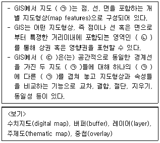
- ㉠ 레이어, ㉡ 버퍼, ㉢ 중첩
- ㉠ 수치지도, ㉡ 버퍼, ㉢ 주제도
- ㉠ 주제도, ㉡ 레이어, ㉢ 버퍼
- ㉠ 주제도, ㉡ 수치지도, ㉢ 레이어
- ㉠ 레이어, ㉡ 주제도, ㉢ 중첩
(정답률: 10%)
49. 기존 상권이론들은 고객이 오프라인 공간에서 쇼핑할 도시나 소매센터를 선택할 때 쇼핑여행 거리 또는 소요시간의 영향을 받는다고 주장한다. 온라인 쇼핑 상황에서 이 거리나 시간에 해당하는 요인으로 가장 옳지 않은 것은?
- 배달요금
- 배달시간
- 운영시간
- 사용언어
- 사용통화(화폐)
(정답률: 10%)
50. 점포개설과정에서 입지조건을 평가하는 대표적 항목들을 예시한 것이다. 아래 ＜보기＞에서 해당하는 특성을 찾아 순서대로 바르게 제시한 것은?
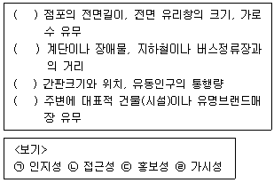
- ㉠ - ㉡ - ㉣ - ㉢
- ㉣ - ㉡ - ㉢ - ㉠
- ㉢ - ㉡ - ㉠ - ㉣
- ㉣ - ㉠ - ㉢ - ㉡
- ㉢ - ㉡ - ㉣ - ㉠
(정답률: 20%)
51. 점포의 임대차과정에서 다루게 되는 권리금에 대한 설명으로 옳지 않은 것은?
- 토지 또는 건물의 임대차와 관련해 발생하는 부동산이 갖는 특수한 장소적 이익의 대가를 의미한다.
- 점포의 영업시설, 비품, 거래처, 신용, 영업상의 노하우, 상가건물 위치에 따른 영업상의 이점 등을 양도 또는 이용하는 대가이다.
- 점포에 내재된 부가가치의 하나로 바닥권리금, 시설권리금, 영업권리금, 기타권리금 등이 포함된다.
- 기타권리금이란 사업자가 확보한 단골고객의 가치로서 영업활동을 통해 얻을 수 있는 이익에 의하여 형성된 권리금이다.
- 권리금 계약은 신규임차인이 되려는 자가 임차인에게 권리금을 지급하기로 하는 계약이다.
(정답률: 10%)
52. 소매업의 공간적 분포와 관련된 설명 중에서 옳지 않은 것은?
- 소매 판매액의 변화가 없어도 해당 지역의 인구가 감소하면 중심성지수는 높아지게 된다.
- 교외형 쇼핑센터가 개발되고 소매업이 교외로 적극적으로 진출하게 되면 도시간 분업이 강화된다.
- 자기 지역의 소매업을 강화하여 구매력의 유출을 막고 인접도시에서 구매고객을 유인하려는 도시간 경쟁이 나타나고 있다.
- 주변도시는 선매품에 대해서는 중심부로 흡인되지만 그와 함께 그보다 바깥에 위치한 지역으로부터 구매력을 흡인하게 된다.
- 소매상권이 지리적으로 어느 정도의 범위를 갖는가를 확인하는 방법으로 기존점포 상권의 경우에는 거주지 확인법(spotting technique)을 주로 활용한다.
(정답률: 0%)
53. 소매점 상권의 범위나 일반적인 특성에 대한 설명으로 가장 옳지 않은 것은?
- 소매점포를 둘러싼 배후지 거주자들의 연령별, 성별 인구구성에 따라 상권의 범위와 특성이 달라질 수 있다.
- 대도시의 경우 소매점포를 이용하는 소비자들이 분포하는 공간을 상권으로 인식하는데 상권의 형태는 일반적으로 동심원 구조로 나타난다.
- 교통수단이 발달할수록 고객의 접근성이 커지면서 상권의 공간적 범위가 확대될 수 있다.
- 상권의 범위는 경쟁자가 없는 방향으로는 확대될 수 있는 반면, 유력 경쟁자가 있는 방향으로는 축소될 수 있다.
- 3차상권은 2차상권의 외부에 위치하며 소비자의 밀도가 상대적으로 낮고 상권의 한계가 되는 지역범위로 구획한다.
(정답률: 0%)
54. 아래 글상자안의 내용과 가장 관련이 깊은 것은?
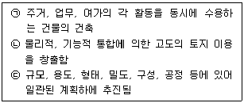
- 도심 활성화 프로젝트
- 도시 공간 재배치
- 도심 공동화 방지 정책
- 복합용도 개발
- 상권활성화 지역 선정
(정답률: 10%)
55. 입지조건을 고려하여 점포의 매력도를 평가할 때 이용할 수 있는 회귀분석 모형에 관한 설명으로 가장 옳지 않은 것은?
- 분석에 사용하는 표본의 수가 충분하게 확보되어야 한다.
- 소매점포의 성과에 영향을 미치는 요소들을 파악할 수 있다.
- 성과에 영향을 미치는 독립변수에는 상권내 소비자의 특성이 포함될 수 있다.
- 회귀분석모형에 포함되는 독립변수는 서로 상관성이 높은 변수들을 활용한다.
- 성과에 영향을 미치는 독립변수에는 점포특성과 상권 내 경쟁수준 등이 포함될 수 있다.
(정답률: 0%)
56. 다점포운영에 대한 설명으로 옳지 않은 것은?
- 일반적으로 점포가 개설되어 있는 지역규모의 시장을 대상으로 상품, 가격, 촉진전략을 관리하는 데에 가장 효과적인 방법이다.
- 자기잠식에 의해 고객은 상대적으로 덜 혼잡한 점포내에서 쇼핑환경을 경험한다.
- 좁은 지역에서의 다점포 운영은 상품의 다양성을 확보할 수 있어 규모의 경제가 가능하다.
- 점포의 잠재성장력에 영향을 미치게 되어 개별점포의 수익은 지속적으로 감소한다.
- 지역 담당 관리자는 점포가 개점된 지역시장에 대한 계획수립이 불가능하다.
(정답률: 0%)
57. 국토의 계획 및 이용에 관한 법률(법률 제17898호, 2021.1.12., 일부개정)에 따르면 상업지역은 도심기능 및 서비스 범위를 기반으로 세분화하여 지정하게 되는데 그 내용이 옳지 않은 것은?
- 중심상업지역 : 도심·부도심의 상업기능 및 업무기능의 확충을 위하여 필요한 지역
- 일반상업지역 : 일반적인 상업기능 및 업무기능을 담당하게 하기 위하여 필요한 지역
- 근린상업지역 : 근린지역에서의 일용품 및 서비스의 공급을 위하여 필요한 지역
- 유통상업지역 : 도시내 및 지역간 유통기능의 증진을 위하여 필요한 지역
- 주거상업지역 : 주거지역 인근에 일부 상업기능을 보완하기 위하여 필요한 지역
(정답률: 10%)
58. 소매상권을 평가하여 소매입지를 선정할 때 여러 가지의 지수법(index)이 활용되기도 한다. 아래의 내용 중에서 각종 지수법에 대한 설명으로 옳지 않은 것은?
- 구매력지수(BPI)는 시장의 구매력을 측정하는 지표로서 주로 인구, 소매 매출액, 유효소득 등의 요인을 이용하여 측정한다.
- 구매력지수(BPI)와 판매활동지수(SAI)가 높을수록 시장 구매력이 크다고 볼 수 있다.
- 시장포화지수(RSI)는 특정 시장내에서 주어진 제품계열에 대한 점포면적당 잠재매출액의 크기이다.
- 판매활동지수(SAI)는 특정지역의 총면적당 점포면적 총량의 비율을 말한다.
- 시장확장잠재력지수(MEP)는 지역내 소비자들이 타지역에서 쇼핑하는 비율을 고려하여 계산한다.
(정답률: 0%)
59. 일반적인 상업시설과 관련한 설명으로 적절하지 않은 것은?
- 상가에서 독립한 건물로서 구분소유의 대상이 되고 독립된 건물로서 사용될 수 있는 부분이 전유부분이다.
- 수개의 전유부분으로 통하는 복도, 계단, 기타 구조상 구분소유자의 전원 또는 일부의 공용에 제공되는 건물부분을 공용부분이라 한다.
- 전유부분이라 하더라도 공동의 휴게실, 도서실, 집회실 등 구분소유자간의 합의에 의해 공용부분으로 사용할 수 있다.
- 전유부분이 될 수 있는 요건으로는 구조상의 독립성과 이용상의 독립성이 있어야 한다.
- 구조상의 독립성이란 독립한 건물과 동일한 경제적 효용을 가진 것을 말한다.
(정답률: 0%)
60. 건축물의 바닥면적, 연면적, 대지면적 등을 비교하여 산정되는 용적률과 건폐율에 대한 설명으로 가장 옳지 않은 것은?
- 토지이용 과밀화 방지나 토지이용도 제고를 위해 건폐율을 강화 또는 완화하여 적용한다.
- 용적률과 건폐율은 대지내부의 입체적 또는 평면적 건축밀도를 나타내는 지표로 활용된다.
- 지하층의 면적, 주민공동시설의 면적은 용적률 산정에서 제외된다.
- 지상층의 주차용 면적은 해당 건축물의 부속용도로 쓰는 경우 용적률 산정에 포함된다.
- 용적률은 기준용적률, 허용용적률, 상한용적률로 세분되기도 한다.
(정답률: 10%)
4과목: 유통마케팅
61. 유통업체브랜드(PB: Private Brand)에 대한 설명으로 옳지 않은 것은?
- 오프라인 소매점 뿐만 아니라 홈쇼핑 및 온라인 유통점까지 다양한 유통업체에서 유통업체브랜드가 활용되고 있다.
- 유통업체브랜드를 통해 유통업체의 차별성을 강화할 수 있다.
- 유통업체는 판매촉진에 대한 통제력을 이용해 자사유통업체브랜드 제품들의 상대적 우위를 강화할 수 있다.
- 유통업체브랜드를 통해 유통업체는 독점적인 제품들을 확보할 수 있다.
- 유통업체브랜드를 활용함으로써 유통업체의 부가가치는 감소하고 제조업체의 부가가치는 증가한다.
(정답률: 19%)
62. 아래 글상자의 내용이 설명하는 제품의 유형으로 가장 옳은 것은?
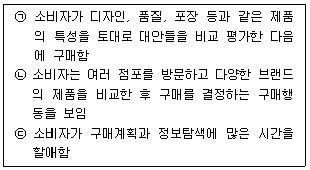
- 편의품(convenience goods)
- 전문품(speciality goods)
- 선매품(shopping goods)
- 비탐색품(unsought goods)
- 필수품(staple goods)
(정답률: 0%)
63. 원가와 이익에 대한 설명으로 가장 옳지 않은 것은?
- 매입원가란 슈퍼마켓, 백화점 등 재판매점업자가 공급업자에게서 상품을 구입하여 판매가능한 상태로 만들기까지 필요한 원가이다.
- 매입원가는 매입가격에 매입에 관련된 운반비용, 보험료 등을 합한 것으로 인도조건에 따라 매입비용의 금액이 변화한다.
- 매출총이익이란 해당기간의 매출액에 대한 이익으로 단순히 총매출액에서 매출원가를 공제한 것을 의미한다.
- 매출원가란 해당기간 동안 상품의 매입 또는 제조로 발생한 원가를 의미한다.
- 매출원가는 [기초상품재고액 + 당기상품매입액 - 기말상품재고액]으로 구한다.
(정답률: 0%)
64. 브랜드에 대한 일반적인 설명으로 옳은 것은?
- 브랜드의 수명은 제품의 수명보다 짧기 때문에 기업은 지속적으로 신규 브랜드를 개발하여야 한다.
- 진부화효과를 피하기 위해서 상표명(브랜드 네임)은 일정기간이 지나면 변경해 주는 것이 바람직하다.
- 브랜드는 기업의 성과를 담는 그릇이라 브랜드를 구축하는 과정 또한 마케팅이라 할 수도 있다.
- 브랜드를 중심으로 비교구매하는 행위는 소비자의 정보처리비용을 증가시킨다.
- 소비자들이 브랜드를 구매의사결정의 기준으로 삼는 것은 제품의 속성정보를 중요시하기 때문이다.
(정답률: 10%)
65. 상시저가격전략(EDLP)과 고/저가격전략(High/Low Pricing)의 장단점에 대한 설명으로 옳지 않은 것은?
- 상시저가격전략은 광고비를 절감하는데 도움이 된다.
- 상시저가격전략은 재고관리의 효율화에 도움이 된다.
- 고/저가격전략은 서비스에만 민감하고 가격에는 민감하지 않은 소비자들에게 집중한다.
- 고/저가격전략은 잦은 할인으로 일시적으로 소비자가 증가할 수 있다.
- 고/저가격전략은 가격차별을 통한 수익 증대를 추구할 수 있다.
(정답률: 20%)
66. 마케팅전략을 기업 차원(corporate level)에서의 전략과 사업 단위(business level)별 전략으로 나누어 봤을 때, 다음 중 사업 단위에서 수행되는 마케팅 전략으로 가장 옳지 않은 것은?
- 사업환경의 분석
- 시장세분화와 표적시장 선택
- 사업포트폴리오의 설계
- 경쟁사와의 강약점 비교분석
- 마케팅 프로그램 개발
(정답률: 0%)
67. 성장전략 중 제품시장 경계(product-market boundary)와 관련된 전략이 아닌 것은?
- 시장개척전략
- 다각화전략
- 전방통합전략
- 시장침투전략
- 제품개발전략
(정답률: 10%)
68. 시장세분화 과정에 대한 설명으로 옳지 않은 것은?
- 시장세분화를 위한 기준을 확인한다.
- 각 세분시장의 잠재적 성장가능성을 파악한다.
- 각 세분시장의 매력도를 측정할 수 있는 수단을 개발한다.
- 기업이 사업을 추진하는데 적합한 세분시장을 선정한다.
- 각 세분시장의 크기 및 특성을 확인한다.
(정답률: 0%)
69. 아래 글상자의 설명에 해당하는 용어로 옳은 것은?
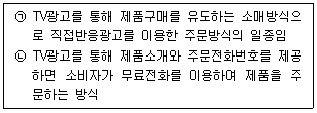
- 인포머셜(informercial)
- 재핑(zapping)
- 협동광고(cooperative advertising)
- 통합광고(coordinated advertising)
- 구매시점광고(point of purchase advertising)
(정답률: 0%)
70. 아래 글상자의 내용은 우유부단형 고객의 특성을 나열한 것이다. 우유부단형 고객에 대한 판매원의 대응방식으로 가장 옳지 않은 것은?
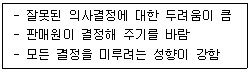
- 판매원은 자신감을 보여야 한다.
- 가능한 한 빨리 고객욕구를 파악하여 이에 집중하여야 한다.
- 작은 부분부터 먼저 결정할 수 있게 도와준다.
- 가능한 한 비슷한 대안을 많이 제시하여 고객이 최선의 대안을 선택할 수 있게 한다.
- 판매포인트를 좁게 제시하여 우유부단함을 극복하고 쉽게 판단할 수 있도록 한다.
(정답률: 19%)
71. 인터넷의 발달로 소비자들의 라이프스타일에 많은 변화가 발생했다. 마케팅 방식도 전통적 기본요소인 4P 대신, 인터넷 기반을 활용해 소비자들에게 제공해야 할 편익을 의미하는 4C로 변경되고 있다. 4C의 구성요소로서 가장 옳은 것은?
- Consumer, Communication, Commerce, Cost
- Contents, Community, Commerce, Communication
- Customization, Community, Cost, Communication
- Contents, Customization, Commerce, Cost
- Consumer, Contents, Cost, Communication
(정답률: 19%)
72. 구매 전 단계에 있는 고객에 대한 커뮤니케이션의 역할로 옳지 않은 것은?
- 구매 위험을 감소시킨다.
- 인지부조화를 감소시킨다.
- 구매확률을 높인다.
- 브랜드 자산을 구축한다.
- 브랜드 인지도를 제고한다.
(정답률: 0%)
73. 서비스수명주기에 관한 설명으로 가장 옳지 않은 것은?
- 보통 서비스수명주기는 상품수명주기와 같은 단계들로 이루어진 것으로 파악한다.
- 도입단계에서는 시장이 기업과 그 서비스를 인식하도록 인지도 확대에 집중해야 하며 구전커뮤니케이션이 효과적인 수단이다.
- 성장단계에서는 신규기업들의 진입으로 인해 경쟁이 치열하기 때문에 경쟁사와의 차별화된 서비스 전략이 필요하다.
- 성숙단계에서는 취약한 경영구조를 갖는 서비스 기업들이 시장에서 퇴출되기 때문에 기존고객의 재구매를 유도하기 보다는 신규고객이나 가망고객들을 유치하는 전략이 효과적이다.
- 쇠퇴단계에서는 매출이 급격히 감소하기 때문에 사업에서 철수하거나 신규 표적시장에게 소구할 수 있도록 새로운 서비스 제공을 모색할 필요가 있다.
(정답률: 0%)
74. 고객들에게 제공하는 서비스경험의 가치를 극대화하려는 servuction 프로세스에 대한 설명으로 가장 옳은 것은?
- Service와 Product의 두 단어의 결합으로 만들어진 합성어로 서비스의 상품화 과정을 의미한다.
- 서비스의 특징인 비분리성으로 인해 발생하는 고객접점에서의 서비스를 최우선으로 하는 서비스 프로세스를 의미한다.
- Servuction 프로세스의 구성요인 중 하나인 서비스 스케이프(servicescape)는 물리적 증거를 사용하여 서비스 환경을 디자인한 것을 말한다.
- 서비스품질격차를 최소화하기 위해 다양한 서비스를 최적화하는 서비스 개선프로세스를 의미한다.
- 가격인하 또는 촉진활동 등을 통해 서비스의 소멸성을 극복하고 서비스 제공을 지속화하는 프로세스를 의미한다.
(정답률: 0%)
75. 가격결정 방식들에 대한 설명으로 옳지 않은 것은?
- 원가기반 가격결정 방식은 이윤의 극대화를 명시적으로 고려하지 않는다.
- 원가기반 가격결정 방식의 활용을 위해서는 판매량을 가정할 필요가 있다.
- 가치기반 가격결정 방식에서는 제품의 객관적 가치의 측정이 중요하다.
- 경쟁기반 가격결정 방식의 활용을 위해 유사한 제품 및 서비스를 제공하는 경쟁자들의 가격정책을 모니터링 할 필요가 있다.
- 경쟁기반 가격결정방식을 사용할 경우 유사한 제품 및 서비스를 제공하는 기업들 간 가격경쟁이 발생할 수 있다.
(정답률: 10%)
76. 아래 글상자에서 설명하는 판매촉진 방법으로 옳은 것은?
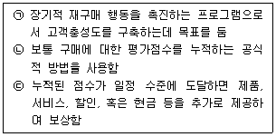
- 쿠폰
- 가격할인
- 환불과 상환
- 프리미엄
- 상용고객 프로그램
(정답률: 10%)
77. 재고총이익률(GMROI)을 구성하는 요인들에 대한 설명으로 옳지 않은 것은?
- 재고회전율은 판매액을 누적 재고 금액으로 나눈 값이다.
- 총이익률은 총이익을 판매액으로 나눈 값이다.
- 재고총이익률은 재고회전율과 총이익률의 곱으로 나타난다.
- 재고총이익률은 총이익을 평균 재고 금액으로 나눈 값이다.
- 재고회전율에만 초점을 맞출 경우 총이익률과 재고 총이익률이 감소할 수 있다.
(정답률: 0%)
78. 카테고리관리에 대한 설명으로 옳은 것은?
- 카테고리는 고객들이 대체가능하다고 생각하는 품목들을 모아놓은 것이며, 고객별로 분류할 수도 있다.
- 카테고리관리를 잘 하기 위해서는 상품 공급업체 중심으로 상품기획활동을 수행해야 한다.
- 카테고리는 상품계열(product classification)보다 큰 개념이다.
- 공급업체 입장의 카테고리와 소매업체 입장의 카테고리는 동일하여야 한다.
- 매입담당자가 각자 최선을 다한다면 매입관리로 카테고리관리 기능을 대신할 수 있다.
(정답률: 0%)
79. 소매점의 경쟁우위 원천 중에서 그 효과가 장기적이고 지속적인 요인들만 나열한 것으로 가장 옳은 것은?
- 보다 편리한 입지, 보다 많은 상품 구색, 보다 깨끗한 점포, 보다 좋은 물류시스템
- 보다 편리한 입지, 보다 나은 정보 시스템, 보다 좋은 물류시스템, 보다 우호적인 공급자 관계
- 보다 깨끗한 점포, 보다 독점적인 상품, 보다 나은 정보시스템, 보다 빠른 컴퓨터
- 보다 광범위한 고객 데이터베이스, 보다 많은 상품 구색, 보다 우수한 종업원, 보다 큰 구매력
- 보다 많은 상품 구색, 보다 독점적인 상품, 보다 우수한 고객서비스, 보다 시각적으로 우수한 상품기획
(정답률: 10%)
80. 국내 TV홈쇼핑 산업에 대한 설명으로 옳지 않은 것은?
- TV홈쇼핑은 비교적 역사가 짧은 무점포소매업으로 정부의 허가와 규제를 받는다.
- TV홈쇼핑 사업은 우수한 상품조달 능력, 체계적인 물류시스템, 효율적 고객데이터 관리 및 다양한 고객서비스가 요구된다.
- 방송법 상 TV홈쇼핑 사업자는 T커머스 사업을 동시에 할 수 없다.
- 사업 초기에는 유형상품을 주로 판매하였으나, 최근 들어 관광, 보험, 금융과 같은 서비스 상품까지 판매영역을 확대하고 있다.
- 홈쇼핑 호스트는 단순 상품소개 진행자가 아니며, 방송진행기법, 상품지식, 소비심리파악 등에 대해서도 잘 알고 있어야 한다.
(정답률: 10%)
5과목: 유통정보
81. 아래 글상자 ( )안에 들어갈 기술로 가장 옳은 것은?
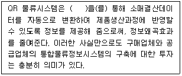
- NFC(Near Field Communication)
- EDI(Electronic Data Interchange)
- Wireless Network
- OLTP(Online Transaction Processing)
- OLAP(Online Analytical Processing)
(정답률: 19%)
82. SCOR(Supply Chain Operation Reference) 모델의 성과 측정 구성요소가 아닌 것은?
- 신뢰성(reliability)
- 유연성(flexibility)
- 대응성(responsiveness)
- 비용(cost)
- 자본(capital)
(정답률: 20%)
83. 공급사슬관리의 발전 방향에 대한 설명으로 가장 옳지 않은 것은?
- 공급자 주도에서 시장 주도로 변화된다.
- 대량 생산에서 고객 맞춤화로 변화된다.
- 대중 마케팅에서 일대일 마케팅으로 변화된다.
- 재고 기반에서 정보 기반으로 변화된다.
- 고객 가치 지향 생산에서 저비용 생산으로 변화된다.
(정답률: 10%)
84. 아래 글상자 ( )안에 들어갈 용어로 가장 옳은 것은?
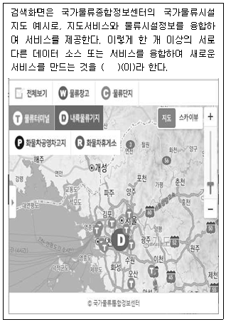
- 텍스트마이닝(Text mining)
- 이미지마이닝(Image mining)
- GPS(Global Positioning System)
- 매시업(Mash up)
- 대시보드(Dash board)
(정답률: 0%)
85. 가치사슬 활동에 대한 설명으로 가장 옳지 않은 것은?
- 가치사슬 활동은 주활동과 보조활동으로 구성되어 있다.
- 주활동은 인바운드 로지스틱(inbound logistics) 활동, 아웃바운드 로지스틱(outbound logistics) 활동, 판매 및 마케팅 활동 등으로 구성된다.
- 보조활동은 회사의 인적자원관리 활동, 연구와 개발활동 등으로 구성된다.
- 대표적인 아웃바운드 로지스틱(outbound logistics) 활동에는 리벌스 로지스틱(reverse logistics) 활동이 있다.
- 주활동과 보조활동은 경쟁 우위 창출에 영향을 미친다.
(정답률: 10%)
86. A사는 유통정보시스템을 발주하여 마무리단계에 있다. A사 담당자는 요구사항을 분석하여 모두 시스템으로 구축되었는가, 사용이 편리한가 등을 고객이 직접 참여해서 테스트할 일정을 협의 중에 있다. 이 단계에서 이루어지는 테스트를 지칭하는 용어로 가장 옳은 것은?
- 코드단위 테스트
- 단위 테스트
- 통합 테스트
- 인수 테스트
- 시스템 테스트
(정답률: 0%)
87. 아래 글상자 (㉠), (㉡)에 들어갈 용어로 가장 옳은 것은?
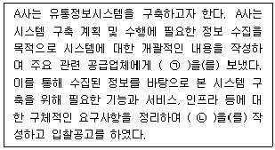
- ㉠ RFD(Request for Demo),
㉡ RFP(Request for Proposal) - ㉠ RFI(Request for Information),
㉡ RFQ(Request for Quotation) - ㉠ RFI(Request for Information),
㉡ RFP(Request for Proposal) - ㉠ RFQ(Request for Quotation),
㉡ RFI(Request for Information) - ㉠ RFP(Request for Proposal),
㉡ RFI(Request for Information)
(정답률: 0%)
88. CRP(Continuous Replenishment Program)를 추진함으로써 얻을 수 있는 효과로 가장 옳지 않은 것은?
- 상품의 결품 예방
- 상품 흐름의 원활화
- 대량생산시스템을 통한 규모의 경제
- 상품의 적시공급을 통한 재고비용 절감
- 유통업체와 제조업체 간 상품 공급망의 유지비용 감소
(정답률: 10%)
89. UN에서 전자자료교환(EDI) 국제표준으로 제정하고 이후 국제표준화기구(ISO)가 승인하여 현재 각국에서 널리 사용되고 있는 EDI 국제표준으로 가장 옳은 것은?
- PSDN
- KTEDI
- KTNET
- EDIFACT
- ANSI X.12
(정답률: 20%)
90. 전자상거래 등에서의 소비자보호에 관한 법률(법률 제 15698호, 2018.6.12., 일부개정)에 따라 소비자가 사업자의 신원 등을 쉽게 알 수 있도록 사이버몰의 운영자가 표시해야 하는 정보로 옳지 않은 것은?
- 상호 및 대표자 성명
- 영업소가 있는 곳의 주소
- 전화번호, 전자우편주소
- 사업자 주민등록번호
- 사이버몰의 이용약관
(정답률: 0%)
91. GS1 표준기반 이력추적시스템 설계 시 검토해야 하는 요소로 수요와 편익, 비용 및 성능요소 등이 있는데, 이 중 비용(costs) 평가요소로 가장 옳지 않은 것은?
- 공급망의 복잡성
- 이력추적의 범위
- 추적의 정확성 수준
- 상품 세분화의 정도
- 타 시스템과 데이터의 호환성
(정답률: 10%)
92. 아래 글상자 내용이 설명하는 용어로 가장 옳은 것은?
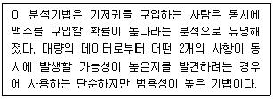
- 회귀분석
- 장바구니분석
- A/B테스트
- 중위수평균
- 로지스틱회귀분석
(정답률: 10%)
93. 아래 글상자 (㉠), (㉡)에 들어갈 용어로 가장 옳은 것은?
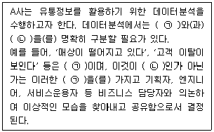
- ㉠ 현상, ㉡ 문제
- ㉠ 문제, ㉡ 현상
- ㉠ 문제, ㉡ 목표
- ㉠ 목표, ㉡ 문제
- ㉠ 현상, ㉡ 목표
(정답률: 10%)
94. 전자상거래 이용자가 온라인 채널에서 상품을 주문하고, 오프라인 매장에서 주문한 물건을 찾아가는 새로운 소비행동을 무엇이라고 하는가?
- 클릭 앤 콜렉트(click and collect)
- 무인점포(unmanned store)
- 단일채널(single channel)
- 고객접점(customer touch point)
- 브릭 앤 모타르(bricks and mortar)
(정답률: 10%)
95. 빅데이터 구축을 위해 A사가 확보하고자 하는 데이터의 유형 중 비정형 데이터에 속하지 않는 것은?
- 소셜미디어에 A사가 수집하고자 하는 내용이 담긴 실시간 대화
- A사의 고객 체험단과 온라인 모바일을 통해 지속적으로 오가는 SMS, 이메일 메시지
- 블로그나 커뮤니티에서 게시된 A사 제품에 대한 제품사진을 포함한 사용 후기
- A사의 유통성과 지표관리를 위해 산식에 적용되는 실시간으로 산정·관리되는 유통계수
- A사가 속한 산업과 관련된 전문정보 및 뉴스 기사
(정답률: 10%)
96. 아래 글상자 (㉠), (㉡), (㉢)에 들어갈 용어로 가장 옳은 것은?
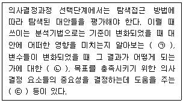
- ㉠ 목적추구(goal seeking) 분석,
㉡ 민감도(sensitivity) 분석,
㉢ 가정(what if) 분석 - ㉠ 가정(what if) 분석,
㉡ 목적추구(goal seeking) 분석,
㉢ 민감도(sensitivity) 분석 - ㉠ 민감도(sensitivity) 분석,
㉡ 가정(what if) 분석,
㉢ 목적추구(goal seeking) 분석 - ㉠ 민감도(sensitivity) 분석,
㉡ 목적추구(goal seeking) 분석,
㉢ 가정(what if) 분석 - ㉠ 목적추구(goal seeking) 분석,
㉡ 가정(what if) 분석,
㉢ 민감도(sensitivity) 분석
(정답률: 10%)
97. 물류 정보망 중 화물유통과 관련한 VAN(Value Added Network)의 기능에 포함되지 않는 것은?
- 자동운임계산
- 수발주 데이터 교환
- 판매정보 수집관리
- 재고정보 교환
- 송장 수집 및 축적관리
(정답률: 0%)
98. 정보화 사회에 진입하면서 기업경영에서 정보자원관리의 필요성을 설명한 내용으로 가장 옳지 않은 것은?
- 사회환경변화에 민첩하게 대응하기 위해 보다 빠른 의사결정을 해야 하기 때문이다.
- 정보기술의 급격한 발전으로 디지털 시대가 확산되면서 경제활동의 글로벌화가 더욱 빠르게 진행될 것으로 예상할 수 있기 때문이다.
- 복잡한 경영문제를 보다 효과적이고 효율적으로 해결하기 위한 수단으로 정보기술의 활용이 그 어느 때보다 절실히 요구되기 때문이다.
- 당면한 경영문제에 대한 합리적인 의사결정을 하기 위하여 다양한 정보 요구의 증대와 아울러 의사결정자에게 선택의 폭을 줄여주기 때문이다.
- 고객의 기호가 다양화 되고 급변하고 있는 시장환경에 신속하고 유연하게 대응하기 위해 다양한 정보를 빠른 시간에 분석해서 보다 빠른 의사결정을 요구하기 때문이다.
(정답률: 0%)
99. 가트너 그룹 등이 빅데이터를 정의하면서 제시한 빅데이터 3대 특성으로 가장 옳은 것은?
- 빅데이터 생성 속도, 빅데이터 규모, 빅데이터의 다양한 형태
- 빅데이터 저장, 빅데이터 관리, 빅데이터 분석
- 빅데이터 자원, 빅데이터 기술, 빅데이터 인력
- 빅데이터 경제성, 빅데이터 투명성, 빅데이터 시각화
- 빅데이터 가치, 빅데이터 복잡성, 빅데이터 규모
(정답률: 0%)
100. 유통정보시스템을 구축하는 과정에서 기획 단계에 수행해야하는 것으로 가장 옳은 것은?
- 유통정보시스템 통제 방안 마련
- 유통정보시스템 분석 및 설계
- 유통정보시스템의 문제점 파악 및 개선작업
- 유통정보시스템 요구사항 분석
- 유통정보시스템의 단계적 실무 적용
(정답률: 10%)